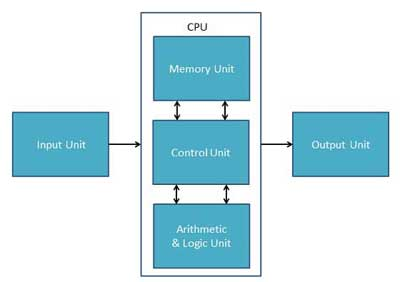

Computer Structure Overview

- The processor is the part of the computer system that handles the instructions used to ensure that hardware and software respond as expected. Processors can handle millions of instructions per second.
- All calculations and logical decisions are handled by the ALU. Processing real numbers would be an example of an action performed by the ALU.
- Registers are temporary storage locations within the processor and store addresses, data or instructions.
- The control unit is responsible for managing the clock, read, write, reset and interrupt lines.
- When a program is running, the data that will be processed by the processor is temporarily stored in RAM. RAM will hold data until it is needed by the processor.
- Buses are used to allow communication to take place between the processor and RAM.
- Translators in the form of an interpreter or compiler translate code into binary.
- Compilers translate source code into object code. Object code is held in a new file and does not require use of translator software to run.
- Interpreters translate source code directly into machine code. The translator runs throughout this translation and execution process.